首页 > 编程笔记
Go语言安装教程（Windows+Linux+macOS）
学习Go语言之前，必须学会如何搭建Go语言的开发环境，不同操作系统有不一样的安装方式。
Go语言的官方下载地址为 https://golang.org/dl/，但是由于国内网络限制问题，我们可以在 https://golang.google.cn/dl/ 下载安装包。
默认下载的 MSI 安装包适用于 64 位 Windows 操作系统，如果计算机是 32 位操作系统，则需要下载 32 位 MSI 安装包，可以在网页中的 Stable versions 中找到，如图3所示。
双击运行下载好的 MSI 安装包即可启动安装程序，看到Go语言的用户许可协议，直接勾选 I accept the terms in the License Agreement 复选框，然后单击 Next 按钮，如图4所示。
在下一个界面选择Go语言的安装路径，默认安装到 C 盘的 Go 文件夹，本教程将安装路径改为 D 盘的 Go 文件夹，如图5所示。
安装路径设置成功后，下一步直接单击 Next 按钮，再单击 Install 按钮，等待程序完成安装，最后单击 Finish 按钮即可完成整个安装过程。
安装完成后打开 CMD 窗口，在 CMD 窗口下输入“go”并按回车键即可看到当前Go语言的指令信息，说明我们已完成Go语言开发环境的搭建，如图6所示。
大多数情况下，使用 MSI 安装包搭建Go语言开发环境无须设置系统的环境变量。如果在 CMD 窗口下查看Go语言的指令信息出现异常，则说明Go语言还没有添加到系统的环境变量，如图7所示。
设置Go语言环境变量可以右击“我的电脑”并选择“属性”，找到“高级系统设置”，如图8所示。
单击“高级系统设置”打开“系统属性”界面，单击“环境变量”并打开系统变量的 Path 属性，在 Path 属性中添加Go语言安装目录的 bin 文件夹，如图9所示。
Go语言的 bin 文件夹存放了Go语言的编译器，打开Go语言的安装目录，其目录结构如图10所示。
目录结构中各个文件夹与文件的功能说明如表1所示。
首先从 https://golang.google.cn/dl/ 复制 Linux 版本的Go语言安装压缩包的下载链接，如图11所示。如果计算机是 32 位的操作系统，可以在网页的 Stable versions 中找到对应安装压缩包的下载链接。
下一步在 CentOS 8 的命令行界面使用 wget 指令下载Go语言安装压缩包，下载路径在 home 文件夹，如图12所示。
然后使用
解压成功后，将 CentOS 8 当前命令行的路径切换到 /home/go，输入
如果将Go语言添加到 CentOS 8 的环境变量，可以编辑 /etc/profile 文件，在文件的末端添加Go语言的安装路径，操作过程如下：
系统环境变量添加成功后，在 CentOS 8 命令行的任意路径下输入
PKG 安装包是 macOS 系统的可执行文件，双击运行并根据安装提示完成安装操作即可，整个安装过程与 Windows 的 MSI 安装包大同小异，如图17所示。如果计算机是 32 位的操作系统，可以在网页的 Stable versions 中找到对应安装压缩包的下载链接。
如果在安装过程中没有设置安装路径，系统自动默认安装在 /usr/local 目录下，如图18所示。
Go语言开发环境安装成功后，还需要设置环境变量。macOS 系统的环境变量设置与 Linux 系统的设置大致相同，操作过程如下：
Go语言的官方下载地址为 https://golang.org/dl/，但是由于国内网络限制问题，我们可以在 https://golang.google.cn/dl/ 下载安装包。
1. Windows安装Go语言
以 Windows 为例，在浏览器访问 https://golang.google.cn/dl/，单击 Windows 的下载链接，浏览器自动下载 MSI 安装包，如图2所示。
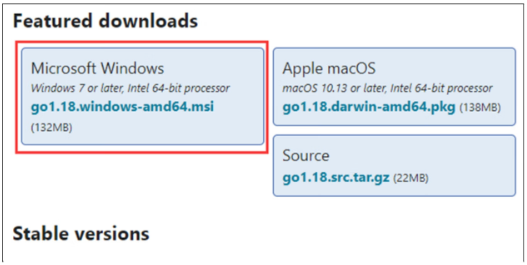
图2：下载 MSI 安装包
图2：下载 MSI 安装包
默认下载的 MSI 安装包适用于 64 位 Windows 操作系统，如果计算机是 32 位操作系统，则需要下载 32 位 MSI 安装包，可以在网页中的 Stable versions 中找到，如图3所示。
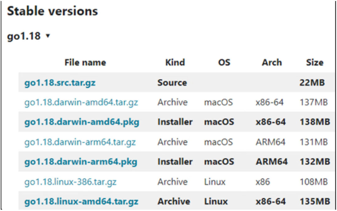
图3：下载 32 位的 MSI 安装包
图3：下载 32 位的 MSI 安装包
双击运行下载好的 MSI 安装包即可启动安装程序，看到Go语言的用户许可协议，直接勾选 I accept the terms in the License Agreement 复选框，然后单击 Next 按钮，如图4所示。
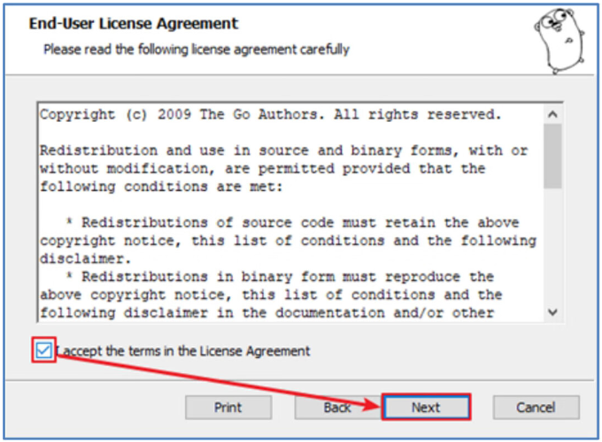
图4：Go语言的用户许可协议
图4：Go语言的用户许可协议
在下一个界面选择Go语言的安装路径，默认安装到 C 盘的 Go 文件夹，本教程将安装路径改为 D 盘的 Go 文件夹，如图5所示。
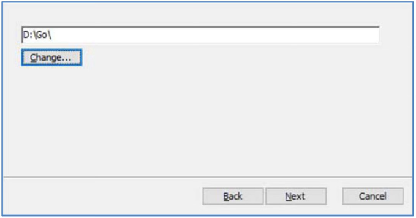
图5：选择安装路径
图5：选择安装路径
安装路径设置成功后，下一步直接单击 Next 按钮，再单击 Install 按钮，等待程序完成安装，最后单击 Finish 按钮即可完成整个安装过程。
安装完成后打开 CMD 窗口，在 CMD 窗口下输入“go”并按回车键即可看到当前Go语言的指令信息，说明我们已完成Go语言开发环境的搭建，如图6所示。
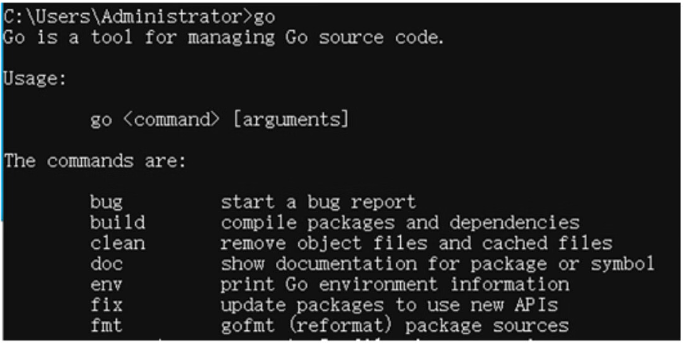
图6：Go语言的指令信息
图6：Go语言的指令信息
大多数情况下，使用 MSI 安装包搭建Go语言开发环境无须设置系统的环境变量。如果在 CMD 窗口下查看Go语言的指令信息出现异常，则说明Go语言还没有添加到系统的环境变量，如图7所示。
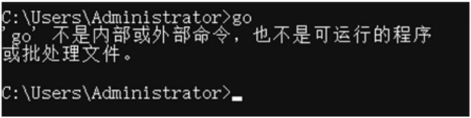
图7：异常信息
图7：异常信息
设置Go语言环境变量可以右击“我的电脑”并选择“属性”，找到“高级系统设置”，如图8所示。
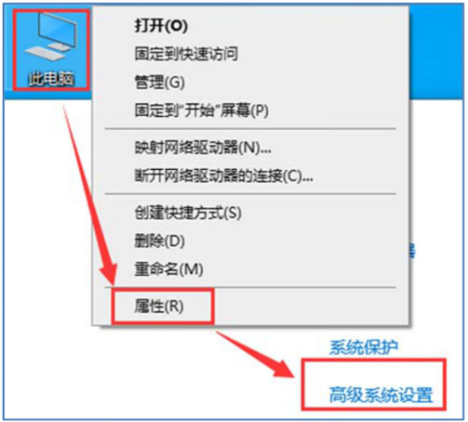
图8：打开高级系统设置
图8：打开高级系统设置
单击“高级系统设置”打开“系统属性”界面，单击“环境变量”并打开系统变量的 Path 属性，在 Path 属性中添加Go语言安装目录的 bin 文件夹，如图9所示。
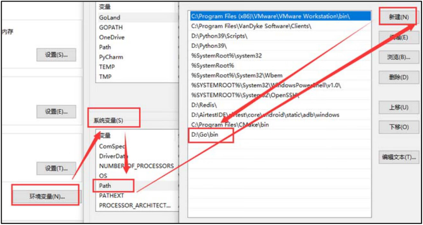
图9：设置Go语言环境变量
图9：设置Go语言环境变量
Go语言的 bin 文件夹存放了Go语言的编译器，打开Go语言的安装目录，其目录结构如图10所示。
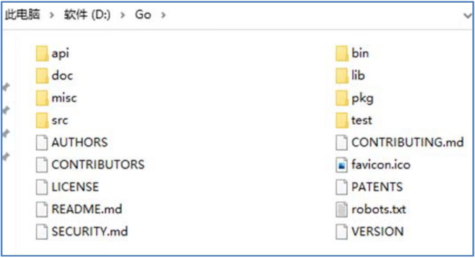
图10：目录结构
图10：目录结构
目录结构中各个文件夹与文件的功能说明如表1所示。
| 文件夹 | 说明 |
|---|---|
| api | 存放 Go API 检查器的辅助文件，说明每个版本的 API 变更与差异 |
| doc | 存放 Go 语言全部 HTML 格式的官方文档，方便开发者离线查看 |
| misc | 存放各类编辑器或 IDE（集成开发环境）的插件，辅助编写 Go 代码 |
| src | 存放所有标准库、Go语言工具及相关底层库（C语言实现）的源码 |
| bin | 存放 Go 语言编译器、文档工具和格式化工具 |
| lib | 存放库文档模块，列举了 time 模块的说明 |
| pkg | 用于构建安装后，保存 Go 语言标准库的所有归档文件 |
| test | 存放测试 Go 语言自身代码的测试用例文件 |
| AUTHORS | Golang 官方作者名单 |
| CONTRIBUTORS | 第三方贡献者名单 |
| LICENSE | 授权协议 |
| README.md | Go 语言说明文件 |
| SECURITY.md | 安全政策 |
| CONTRIBUTING.md | 加入贡献者的指导说明 |
| favicon.ico | 图标文件 |
| PATENTS | 专利文件 |
| robots.txt | 搜索引擎的爬取规则 |
| VERSION | 当前版本的信息文件 |
2. 在Linux下安装Go
目前主流的 Linux 操作系统有 Debian、Ubuntu、RedHat、CentOS、Fedora 等，不同操作系统在使用上存在一定差异，但从整体来看都是大同小异。本教程以 64 位的 CentOS 8 操作系统为例，讲述如何搭建Go语言的开发环境。首先从 https://golang.google.cn/dl/ 复制 Linux 版本的Go语言安装压缩包的下载链接，如图11所示。如果计算机是 32 位的操作系统，可以在网页的 Stable versions 中找到对应安装压缩包的下载链接。
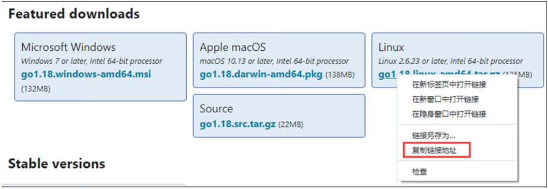
图11：复制下载链接
图11：复制下载链接
下一步在 CentOS 8 的命令行界面使用 wget 指令下载Go语言安装压缩包，下载路径在 home 文件夹，如图12所示。
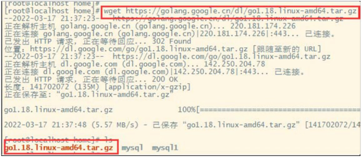
图12：使用 wget 指令下载Go语言安装包
图12：使用 wget 指令下载Go语言安装包
然后使用
tar -zxvf xxx（xxx 代表Go语言安装压缩包）指令对安装压缩包进行解压处理，解压后的文件存放在 home 文件夹，如图13所示。
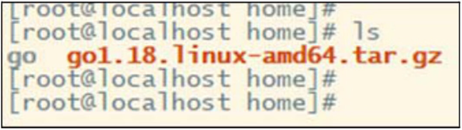
图13：解压压缩包
图13：解压压缩包
解压成功后，将 CentOS 8 当前命令行的路径切换到 /home/go，输入
bin/go并按回车键，系统将会显示Go语言的指令信息，如图14所示。
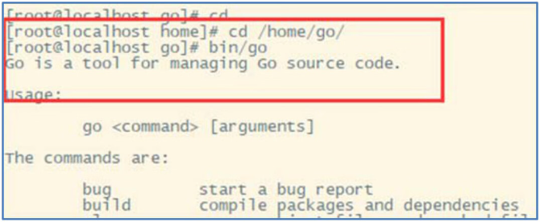
图14：Go语言的指令信息
图14：Go语言的指令信息
如果将Go语言添加到 CentOS 8 的环境变量，可以编辑 /etc/profile 文件，在文件的末端添加Go语言的安装路径，操作过程如下：
# 使用vi指令打开并编辑/etc/profile文件 vi /etc/profile ...... ...... # 在文件的末端添加配置内容，保存/etc/profile文件并退出 export GOROOT=/home/go export GOPATH=/home/golang export PATH=$PATH:$GOROOT/bin # 使用source指令让系统更新/etc/profile的配置 source /etc/profile在上述配置过程中，分别为环境变量设置了 GOROOT、GOPATH 和 PATH，每个配置的说明如下：
- GOROOT：设置Go语言的安装路径。
- GOPATH：设置开发中的项目工程路径，它指向 /home/golang 文件夹，该文件夹需要自行创建。
- PATH：将Go语言安装路径的 bin 文件夹添加到系统环境变量。
系统环境变量添加成功后，在 CentOS 8 命令行的任意路径下输入
go指令就能看到Go语言的指令信息，如图15所示。
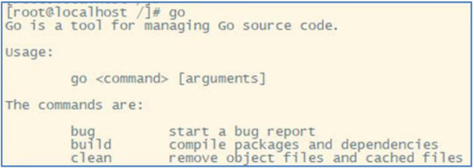
图15：Go语言的指令信息
图15：Go语言的指令信息
3. 在macOS下安装Go
如果使用 macOS 系统搭建Go语言开发环境，也是从 https://golang.google.cn/dl/ 下载安装包，安装包格式是 PKG 格式，如图16所示。
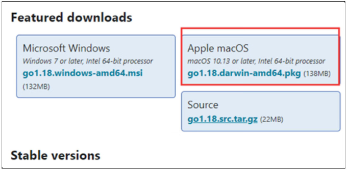
图16：下载 PKG 安装包
图16：下载 PKG 安装包
PKG 安装包是 macOS 系统的可执行文件，双击运行并根据安装提示完成安装操作即可，整个安装过程与 Windows 的 MSI 安装包大同小异，如图17所示。如果计算机是 32 位的操作系统，可以在网页的 Stable versions 中找到对应安装压缩包的下载链接。
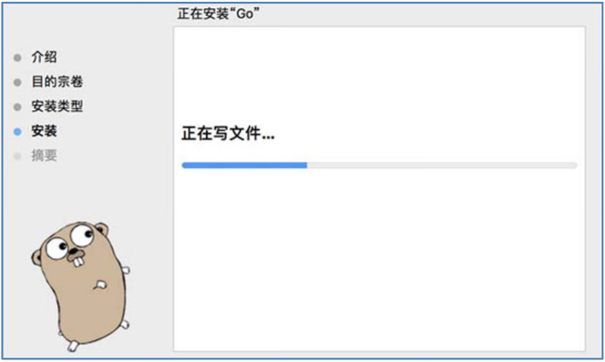
图17：安装Go语言开发环境
图17：安装Go语言开发环境
如果在安装过程中没有设置安装路径，系统自动默认安装在 /usr/local 目录下，如图18所示。
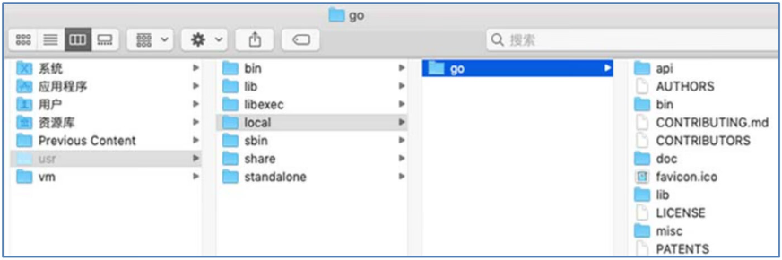
图18：Go语言安装目录
图18：Go语言安装目录
Go语言开发环境安装成功后，还需要设置环境变量。macOS 系统的环境变量设置与 Linux 系统的设置大致相同，操作过程如下：
# 打开bash_profile文件 vim ~/.bash_profile ...... ...... # 在文件的末端添加配置内容，保存bash_profile文件并退出 export GOROOT=/usr/local/go export GOPATH=/usr/local/golang export PATH=$PATH:$GOROOT/bin # 使用source指令让系统更新bash_profile的配置 source ~/.bash_profile
关注公众号「站长严长生」，在手机上阅读所有教程，随时随地都能学习。内含一款搜索神器，免费下载全网书籍和视频。

微信扫码关注公众号